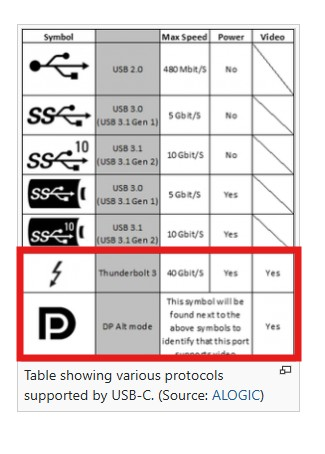

查詢哪些筆電、平板、手機的 USB-C 孔可以直接接螢幕（DisplayPort Alt Mode，含 Thunderbolt 3）。依品牌 A-Z 排列，附出廠年份。目前收錄 1991 筆。

圖：USB-C 各種協定的符號對照（來源：ALOGIC）。
孔旁邊印有紅框內的 Thunderbolt 3（閃電符號） 或 DP Alt mode（DP 符號），這個 USB-C 孔就支援影像輸出。只有 USB 符號或 SS 符號的孔，只傳資料或充電，不能接螢幕。Thunderbolt 4、Thunderbolt 5 與 USB4 同樣支援影像輸出。
此頁需要啟用 JavaScript 才能搜尋。你也可以從下方「依品牌瀏覽」進入各品牌的完整清單。